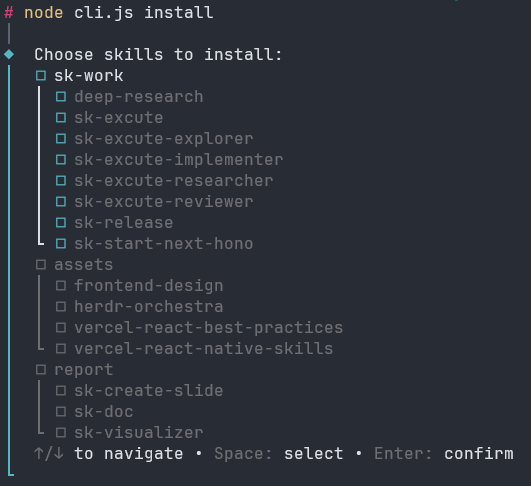

sk-excute
coreQuy trình triển khai task có kiểm soát. Từ yêu cầu người dùng → tạo spec → lập implementation plan → chờ approval → thực hiện thay đổi nhỏ nhất. Không tự ý sửa code khi chưa có plan được duyệt.
Một câu lệnh — luôn cài vào .agents/skills, rồi
bạn chọn có cài thêm cho .claude/skills hay
không. Bạn chọn giữ skill đã tồn tại hoặc replace đúng
những skill đã tick.
npx sb-kit install

Tạo base pnpm workspace, cài bộ core skills và format
project. Sau đó mở project bằng coding agent và gọi
$sk-start-next-hono
để cấu hình Drizzle, auth, proxy và convention sau khi duyệt
plan.
npx sb-kit create next-hono my-app
npx sb-kit install trong project
cần skill.
.claude/skills.
Quy trình triển khai task có kiểm soát. Từ yêu cầu người dùng → tạo spec → lập implementation plan → chờ approval → thực hiện thay đổi nhỏ nhất. Không tự ý sửa code khi chưa có plan được duyệt.
Fast path cho task nhỏ: brainstorm → spec → approval → mini-plan → triển khai inline và verify.
Điều tra codebase read-only, trả evidence về contracts, callers, consumers, tests, risks và unknowns trước spec hoặc plan.
Nghiên cứu external có trích dẫn khi người dùng yêu cầu rõ, ưu tiên primary source và thông tin đúng version.
Review độc lập spec và plan; chỉ blocker hoặc high-risk finding mới chặn approval gate.
Triển khai delegated plan đã duyệt trong scope, không commit hoặc mở rộng scope, rồi trả diff và evidence.
Biến prompt, spec, plan, hoặc nội dung hội thoại thành một file HTML visualization trực quan, dễ đọc. Hỗ trợ nhiều style preset, tự động responsive, có timeline và diagram.
Tạo HTML presentation từ ý tưởng hoặc chuyển đổi PPT/PPTX.
Chuẩn bị release với draft changelog, đề xuất SemVer, summary và checklist; không tự commit, push hoặc tag.
Sinh README, API docs, changelog hoặc usage guide từ codebase thành một file Markdown.
Giải thích source code, flow, state transition và các nhánh xử lý dựa trên file references.
Hoàn thiện workspace Next.js + Hono đã bootstrap với Drizzle, auth, proxy và convention modular monolith.
Thiết kế và xây dựng UI web chất lượng production. Tạo landing page, dashboard, component, React component với aesthetic distinctive — không generic AI look. Tránh Inter/Roboto/Arial, dùng font pair cá tính, background có chiều sâu.
Hướng dẫn tối ưu performance cho React và Next.js từ Vercel. Routing, data fetching, rendering strategies, bundling, image optimization — best practices cập nhật theo từng phiên bản Next.js.
Best practices cho React Native và Expo. Navigation, styling, native modules, performance profiling, deployment — từ dev đến production cho mobile apps.
Điều phối nhiều CLI agent qua herdr để cùng phân tích, tranh luận và phân chia công việc giữa các pane.
Nghiên cứu chuyên sâu từ nhiều nguồn web, tổng hợp phát hiện và viết báo cáo có trích dẫn cùng source attribution.